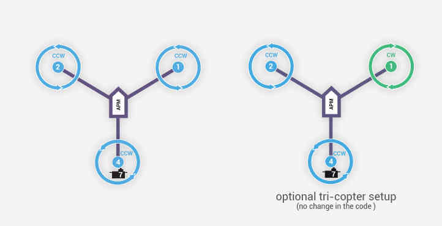

Tricopter Configuration¶
This page outlines the special settings required to get a TriCopter flying. The more general instructions for setting up a multicopter should be used for all other aspects of the setup.
{kind=link}
After loading the firmware please set:
FRAME_CLASS to 7 (“Tri”)
Better separation of RC input and output parameters has also lead to some changes compared to earlier versions. Here is a full list of tricopter specific parameters:
MOT_YAW_SV_ANGLE: tail servo’s maximum lean angle in degrees. This allows for the rear motor’s thrust to be adjusted appropriately depending upon the lean angle of the rear motor. The default is 30 degrees. “0” would mean the tail servo can only point directly up (which would not allow the vehicle to fly), “90” means the tail servo can point horizontally.
SERVO7_MIN: tail servo’s lowest PWM value before binding occurs.
SERVO7_MAX: tail servo’s highest PWM value before binding occurs.
SERVO7_TRIM: tail servo’s PWM value close to what is required to keep the tail from spinning.
SERVO7_REVERSED: tail servo’s reverse setting. 0 = servo moves in default direction, 1 to reverse direction of movement.
The RC output channel used for the tail servo can be changed from its default (channel 7) by setting the appropriate SERVOX_FUNCTION to 39. For example the Pixracer only has 6 output channels so the tail servo can be moved to output channel 5 by setting SERVO5_FUNCTION to 39. Note that if the output channel is changed, the SERVOx_MIN, SERVOx_MAX, SERVOx_TRIM and SERVOx_REVERSED must be set appropriately for the new output channel.